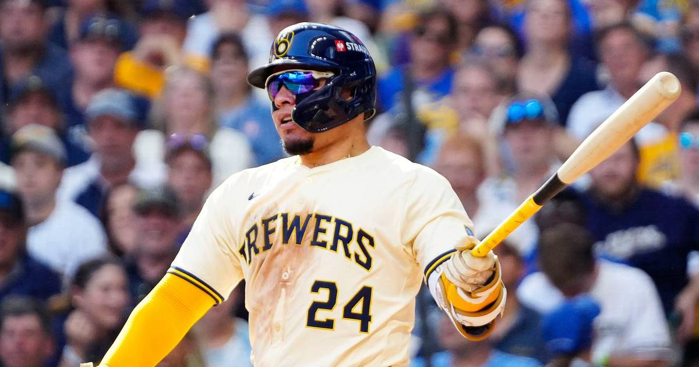

Brewers Hold Off Rays' Ninth-Inning Rally to Win Game 1, 3-2
Trevor Megill struck out Jonny DeLuca with the tying run at third to seal a 3-2 Game 1 win over the Rays — Milwaukee's first World Series game in 44 years, in front of 43,250 at American Family Field.

Disclosure: this post contains affiliate links. I earn a commission on qualifying purchases.
Milwaukee's first World Series game in 44 years came down to the last batter. Closer Trevor Megill struck out Jonny DeLuca with runners on second and third to seal a 3-2 Game 1 win over the Tampa Bay Rays on Friday night at American Family Field, in front of 43,250 standing fans (NBC Sports).
The ninth: chaos, then a strikeout
The Rays didn't go quietly. Down 3-1 with Megill entering to start the ninth, Jonathan Aranda and Chandler Simpson opened with consecutive one-out singles. Pinch runner Jorge Mateo and Simpson executed a double steal, and Junior Caminero walked to load the bases (Reuters).
Liam Hicks appeared to bounce into a game-ending double play — but a video review showed shortstop Cooper Pratt's right foot was slightly off the bag when he caught Brice Turang's throw. Mateo scored on the fielder's choice to make it 3-2, with runners on second and third. Megill then struck out DeLuca for his fifth postseason save in five opportunities.
How Milwaukee got there
The Brewers struck first and never trailed. Jackson Chourio singled on Nick Martinez's first pitch of the game and scored on Christian Yelich's RBI triple — off DeLuca's glove on a diving catch attempt in right-center. William Contreras followed with an RBI single, and the 2-0 lead held.
Chourio drove in the insurance run in the seventh, greeting Kevin Kelly with a first-pitch RBI single down the right-field line to score rookie Cooper Pratt, who had worked an eight-pitch walk to lead off the inning. The Rays got one back in the fourth on Hicks's groundout (USA Today).
Contreras owned the night
William Contreras had the two-way game of his life. His RBI single stood up as the winning run, he went 2-for-4 at the plate — and behind the plate he cut down baserunners foolish enough to run on him twice: Victor Mesa Jr. trying for third with two outs, and Aranda trying for second in the sixth, both perfect throws (USA Today). He also won both of his ABS challenges.
Misiorowski dealt — on 11 days' rest
Jacob Misiorowski's first pitch of the 2026 World Series hit 103.5 mph — the fastest pitch in World Series history, per Statcast. He went five innings allowing one run on four hits, striking out three on 78 pitches, tying the longest postseason start of his career. His four-seamer averaged 101.2 mph, with 37 pitches at 100+ (USA Today).
Abner Uribe and Aaron Ashby combined for three scoreless innings behind him, striking out five. Ashby's scoreless postseason streak is now 14 innings (Milwaukee Journal Sentinel).
Rays: 0; 0; 0; 1; 0; 0; 0; 0; 1; 2; 7; 0
Brewers: 2; 0; 0; 0; 0; 0; 1; 0; X; 3; 8; 0
The rosters behind it
Both clubs named their 26-man World Series rosters Friday, with the headline move Brandon Woodruff's return from the shoulder injury that cost him the season's second half (MLB Trade Rumors). The Rays gave ace Drew Rasmussen an extra day's rest, handing Game 1 to Nick Martinez opposite Misiorowski.
This is the first World Series featuring two potential first-time champions since 1980, when the Phillies beat the Royals in six games — and Milwaukee's first Fall Classic game since 1982. The Game 1 winner has gone on to win the World Series 62.8% of the time (NBC Sports).
Game 2 is Saturday in Milwaukee.
Watch
Source: "RAYS vs. BREWERS: World Series Full Game 1 Highlights (October 23) | 2026 MLB Postseason" on the official MLB YouTube channel — full Game 1 highlights, every run, strikeout, and the ninth-inning escape.
Gear up: Fanatics